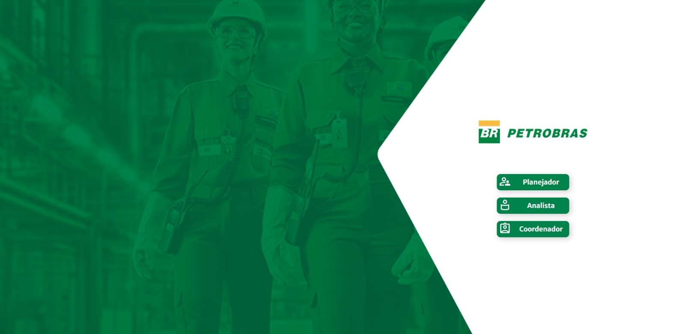

Em andamento
1º semestre
Desenvolvimento de Software Multiplataforma
FATEC
Graduação com foco no desenvolvimento de soluções de software para diferentes plataformas.
Portfólio profissional
Estudante de Desenvolvimento de Software Multiplataforma e desenvolvedor de sistemas em formação contínua.
Gosto de aprender na prática, colaborar com pessoas e transformar ideias em soluções. Estou em busca da minha primeira oportunidade profissional ou de estágio.
Tecnologia com curiosidade
e vontade de fazer acontecer.
Código, boas ideias e um pouco de cultura pop.
Sobre mim
Sou uma pessoa adaptável, sociável, proativa e dedicada. Gosto de trabalhar em equipe, colaborar para encontrar soluções e encarar cada projeto como uma oportunidade de evoluir.
Já tive a oportunidade de participar de diferentes projetos e quero levar essa experiência para um ambiente profissional, colocando meus conhecimentos em prática e aprendendo com novos desafios.
Também curto animes, Marvel e DC, desenhar personagens, jogar, ler sobre cultura pop e manter a rotina de treinos.
Formação
Da formação técnica à graduação, sigo ampliando minha base em tecnologia.
FATEC
Graduação com foco no desenvolvimento de soluções de software para diferentes plataformas.
SENAI · Programa Jovem Aprendiz da Petrobras
Formação em desenvolvimento de sistemas realizada durante minha experiência como jovem aprendiz.
Competências
Tecnologias e recursos que venho estudando e usando em atividades e projetos.
Esta lista está em constante atualização.
Projetos
Alguns projetos acadêmicos e pessoais que desenvolvi durante minha trajetória.
Projeto acadêmico que analisa dados do Banco Central para explorar soluções voltadas à inclusão no acesso ao crédito.
Na primeira sprint, atuei como Product Owner, em contato direto com o cliente para compreender sua visão e orientar o produto. Criei a identidade visual e defini a maior parte das regras de negócio. Na segunda sprint, fui Scrum Master, apoiando a organização do time e o cumprimento dos prazos. Também modelei o banco de dados e tratei os dados do Banco Central.

Aplicação para registrar e acompanhar falhas em equipamentos industriais, atividades de análise e planos de ação.
Participei principalmente com o time de desenvolvimento, criando a prototipagem do projeto, modelando o banco de dados e desenvolvendo o frontend.
Site temático sobre Dragon Ball com páginas dedicadas ao Goku, suas transformações e às esferas do dragão.
Contato
Estou aberto a conversar sobre oportunidades de estágio, primeiro emprego e projetos.